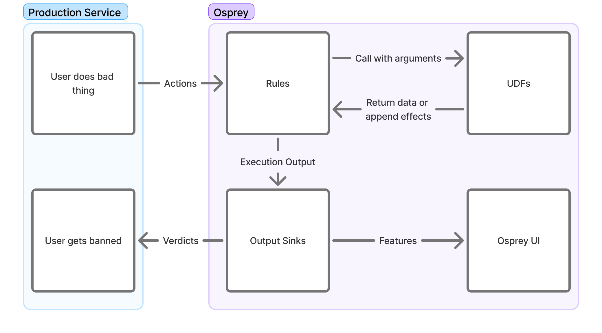

Osprey Rules

Creating Rules
Osprey rules are written in SML (“Some Madeup Language”) which is a subset of Python with additional restrictions to simplify rule writing. You may write rules that are specific to single event types on a network, or ones that are applied to multiple event types.
By themselves, rules only create variables; without a corresponding WhenRules() function call, the rule will have no effects outside of evaluation and query functionality.
Rules currently support the following concepts through the Rule(...) function of the same name:
-
Name
Rule_Name = Rule(...)The name of the rule also functions as a conventional “RuleId” and the name of the bool that can be used to query individual rule hits in the Osprey Query UI. As a result, changing the name of a rule after activation may affect historical query results in the UI if not logged externally.
-
Logic
when_all=[]The actual logic that will be used to evaluate Osprey rules is all encompassed as single comma-delimited list of signals within the
when_allparameter of theRule(...)function and supports the use of Labels, Plugins, UDFs and other values to help enrich heuristics.At present, when evaluating UDFs or abstracted variables, any
NULLevaluations in the series will cause the entire rule function to evaluate asNULL, which may be undesirable. -
Description
description=f''There is an additional string description field that is able to be emitted alongside the rule itself to external systems such as logging and ticketing systems to help enrich work-streams that may benefit from plain-language context on what the rule criteria is and what the rule may intend to do.
It may be helpful to include dynamic variables as well to help enrich operational workflows that may need to identify specific values related to the trigger criteria.
Here’s an example of a simple rule using various signal evaluations and out-of-the-box UDFs:
My_Rule_Name_v2 = Rule(
when_all=[
# Primary Signal
MyFirstValue == True,
HasLabel(entity=MyEntityName, label='MyLabel'),
ListLength(list=UsersValues) == 5,
# Secondary Signal
RegexMatch(target=MyStringValue, pattern='(hello|world)'),
MySecondValue >= 3,
MyThirdValue != Null,
# Guardrail Signal
(_LocalValue in [1, 2, 3, 5]) or (GlobalValue in ['hello', 'howdy']),
not HasLabel(entity=MySecondEntityName, label='MySecondLabel'),
],
description=f"{UserA} performed {ActionB} in this way. Emit warning",
)
Rule Structuring
You will likely find it useful to maintain two subdirectories inside of your main rules directory - a rules directory where actual logic will be added and a models directory for defining the various features that occur in any or specific event types. For example, your structure may look something like this:
example-rules/
| rules/
| | record/
| | | post/
| | | | first_post_link.sml
| | | | index.sml
| | | like/
| | | | like_own_post.sml
| | | | index.sml
| | account/
| | | signup/
| | | | high_risk_signup.sml
| | | | index.sml
| | index.sml
| models/
| | record/
| | | post.sml
| | | like.sml
| | account/
| | | signup.sml
| main.sml
The main.sml file at the root of your rules directory serves as the entrypoint. It uses Import and Require statements to control which other files are loaded and when, allowing you to compose together logic across the project. This sort of structure lets you define rules and models that are specific to certain event types so that only the necessary rules are run for various event types. For example, you likely have some rules that should only be run on a post event, since only a post will have features like text or mention_count.
Inside of each directory, you may maintain an index.sml file that will define the conditional logic in which the rules inside that directory are actually included for execution. Although you could handle all of this conditional logic inside of a single file, maintaining separate index.smls per directory greatly helps with neat organization. See Workflow Structure and File Placement for more on Import and Require.
Models
Before you actually write a rule, you’ll need to define a “model” for an event type. For this example, we will assume that you run a social media website that lets users create posts, either at the “top level” or as a reply to another top level post. Each post may include text, mentions of other users on your network, and an optional link embed in the post. Let’s say that the event’s JSON structure looks like this:
{
"eventType": "userPost",
"user": {
"userId": "user_id_789",
"handle": "carol",
"postCount": 3,
"accountAgeSeconds": 9002
},
"postId": "abc123xyz",
"replyId": null,
"text": "Is anyone online right now? @alice or @bob, you there? If so check this video out",
"mentionIds": ["user_id_123", "user_id_456"],
"embedLink": "https://youtube.com/watch?id=1"
}
Inside of our models/record directory, we should now create a post.sml file where we will define the features for a post.
PostId: Entity[str] = EntityJson(
type='PostId',
path='$.postId',
)
PostText: str = JsonData(
path='$.text',
)
MentionIds: List[str] = JsonData(
path='$.mentionIds',
)
EmbedLink: Optional[str] = JsonData(
path='$.embedLink',
required=False,
)
ReplyId: Entity[str] = JsonData(
path='$.replyId',
required=False,
)
The JsonData UDF lets us take the event’s JSON and define features based on the contents of that JSON. These features can then be referenced in other rules that we import the models/record/post.sml model into. If you have any values inside your JSON object that may not always be present, you can set required to False, and these features will be None whenever the feature is not present.
Note that we did not actually create any features for things like userId or handle. That is because these values will be present in any event. It wouldn’t be very nice to have to copy these features into each event type’s model. Therefore, we will actually create a base.sml model that defines these features which are always present. Inside of models/base.sml, let’s define these.
EventType = JsonData(
path='$.eventType',
)
UserId: Entity[str] = EntityJson(
type='UserId',
path='$.user.userId',
)
Handle: Entity[str] = EntityJson(
type='Handle',
path='$.user.handle',
)
PostCount: int = JsonData(
path='$.user.postCount',
)
AccountAgeSeconds: int = JsonData(
path='$.user.accountAgeSeconds',
)
Here, instead of simply using JsonData, we instead use the EntityJson UDF for the UserID. This is covered in the UDFs section, but as a rule of thumb, you likely will want to have values for things like a user’s ID set to be entities. This will help more later, such as when doing data explorations within the Osprey UI.
Model Hierarchy
In practice, you may find it useful to create a hierarchy of base models:
base.smlfor features present in every event (user IDs, handles, account stats, etc.)account_base.smlfor features that appear only in account related events, but always appear in each account related event. Similarly, you may add one likerecord_base.smlfor those features which appear in all record events.
This type of hierarchy prevents duplication (which Osprey does not allow) and ensures features are defined at the appropriate level of abstraction.
Effects with WhenRules
The WhenRules() function allows for creating effects that trigger external services, create declarations, or modify internal labels by listing Rule objects in sequence within the
rules_any parameter of WhenRules(). By default, operators and designers may utilize UDFs with predefined effects such as DeclareVerdict(), LabelAdd(), or LabelRemove() upon
positive rule evaluation.
Below is an example of the use of a WhenRules() block to verify and email and reject a request.
WhenRules(
rules_any=[
Enabled_Rule_1,
Enabled_Rule_2,
# Disabled_Rule_1,
],
then=[
# Verdicts
DeclareVerdict(verdict='reject'),
# Labels
LabelAdd(entity=UserId, label='recently_challenged', expires_after=TimeDelta(days=7)),
LabelAdd(entity=UserId, label='verify', apply_if=NotVerified),
LabelAdd(entity=Email, label='pending_verify'),
LabelAdd(entity=Domain, label='recently_seen', expires_after=TimeDelta(days=7)),
],
)
WhenRules() must be placed after rule declaration within a file, and it may become difficult to interpret outcomes of rules that are too distributed. Therefore, it may be beneficial
to place any effects toward the bottom of workflows.
Output Sinks
After all rules are evaluated for an input event, a set of output sinks takes the resulting ExecutionResult and performs additional work based on that data. These may be defined
as part of a plugin for performing domain specific work.
Some default use cases include a StdoutOutputSink which simply outputs the result to the log, a KafkaOutputSink which pipes data to Kafka (used for Osprey UI), or the
LabelOutputSink which can add some stateful data to be used in future rules executions.
class StdoutOutputSink(BaseOutputSink):
"""An output sink that prints to standard out!"""
def __init__(self, log_sampler: Optional[DynamicLogSampler] = None):
pass
def will_do_work(self, result: ExecutionResult) -> bool:
return True
def push(self, result: ExecutionResult) -> None:
print(f'result: {result.extracted_features_json} {result.verdicts}')
def stop(self) -> None:
pass
Passing data to these output sinks is standardized through the use of Effects, which are outputs of some functions, usually UDFs.
def push(self, result: ExecutionResult) -> None:
users_to_ban = result.effects[BanUserEffect]
ban_users(users_to_ban)
User Defined Functions (UDFs)
User Defined Functions (UDFs) are plugins written in Python that enable users of Osprey to extend and customize their use of the Osprey SML. UDFs are implemented as Python functions and are registered
as a plugin. They extend the UDFBase abstract base class with a set of arguments and an output. These will be executed whenever called in SML.
# example_plugins/text_contains.py
class TextContainsArguments(ArgumentsBase):
text: str
phrase: str
case_sensitive = False
class TextContains(UDFBase[TextContainsArguments, bool]):
def execute(self, execution_context: ExecutionContext, arguments: TextContainsArguments) -> bool:
escaped = re.escape(arguments.phrase)
pattern = rf'\b{escaped}\b'
flags = 0 if arguments.case_sensitive else re.IGNORECASE
regex = re.compile(pattern, flags)
return bool(regex.search(arguments.text))
# example_plugins/register_plugins.py
@hookimpl_osprey
def register_udfs():
return [TextContains]
Usage in SML:
# example_rules/post_contains_hello.sml
ContainsHello = Rule(
when_all=[
EventType == 'create_post',
TextContains(text=PostText, phrase='hello'),
],
description='Post contains the word "hello"',
)
Effect UDFs
Plugins may also define external effects, which are useful for performing functionality in your primary service. Effects are simply passed to output sinks at the end of a rule run.
These UDFs have an output that extends EffectBase, and can be called as a result of a WhenRules.
# example_plugins/src/ban_user.py
class BanUser(UDFBase[BanUserArguments, BanUserEffect]):
category = UdfCategories.ENGINE
def execute(self, execution_context: ExecutionContext, arguments: BanUserArguments) -> BanUserEffect:
return BanUserEffect(
entity=arguments.entity,
comment=arguments.comment,
)
# example_rules/post_contains_hello.sml
WhenRules(
rules_any=[ContainsHello],
then=[BanUser(entity=UserId, comment='User said "hello"')],
)
UDF outputs can also implement the CustomExtractedFeature interface - which get persisted in the outputs for the UI. EffectToCustomExtractedFeatureBase can also be used when effects need additional processing for use in the UI.
Labels
Labels are a standard plugin that enable stateful rules, and touch many parts of Osprey. They are effectively tags on various entities, which may be arbitrarily defined. For more about labels, see User Guide → Investigate → Labels.
Creating Entities
Labels are applied to Entities, which are dynamically interpreted from outputs of the UDF EntityJson, usually applied to pieces of data that are generally consistent across actions such as User ID or email.
# user.sml
UserId: Entity[str] = EntityJson(
type='User',
path='$.user_id'
)
It is possible to create new UDFs that also create entities by having the output of UDF set to EntityT.
Adding Labels
Labels may be added in a WhenRules() clause. This will cause the labels output sink to tag the given entity with the given label at the end of the rules run.
WhenRules(
rules_any=[
Sent_Too_Many_DMs,
],
then=[
LabelAdd(entity=UserId, label='likely_spammer')
],
)
Using Labels
Since labels may be retrieved during a rule run, they can be effectively used as state for your rules.
Should_Warn_User_Of_Spammer = Rule(
when_all=[
HasLabel(entity=UserId, label='likely_spammer'),
This_Is_A_New_DM,
],
)
Labels will also be shown in the UI for entities, and can also be set manually. Note that since the UI only searches across actions, HasLabel() will not work in the Query UI.
Instead, you may use DidAddLabel, which will be true when the given action added a label to a specific entity.
# UI Query
DidAddLabel(entity_type="UserId", label_name="likely_spammer")
Notable Gotchas
Nulls
Nulls are the case where a rule or variable in SML does not exist. This can occur for many reasons - either a piece of data is missing or a rule didn’t run. Unlike many programming languages, generally rules with null valued variables will not evaluate that rule (and thus, downstream rules will not evaluate either). The exception cases are when nulls are explicitly checked in a rule. For example:
Thing: int = JsonData(path='$.property_that_doesnt_exist')
# Evaluates to False
MyFirstRule = Rule(when_all=[
Thing != Null,
])
# Skips evaluation and sets to Null
MySecondRule = Rule(when_all=[
Thing > 1,
])
# Skips evaluation and sets to Null
MyThirdRule = Rule(when_all=[
MySecondRule,
])
Workflow Structure and File Placement
SML files can be composed to make your rules easier to understand. The Import statement allows you to include rules and variables found in other files.
# models/action_name.sml
ActionName = "foo"
# main.sml
Import(
rules=[
'models/action_name.sml',
'models/http_request.sml',
]
)
MyRule = Rule(when_all=[ActionName == "foo"])
Require allows you to selectively run other SML scripts. Requires supports templating and conditionals, allowing scripts to be filtered out if necessary. This is important in situations where some rules or UDFs are particularly expensive to run (such as making a call to an AI service, for example).
# main.sml
Require(rule=f'actions/{ActionName}.sml') # will execute 'actions/foo.sml'
Require(rule='ai_services/my_ai_service.sml', require_if=ActionName == "register")
Full Example
The following is a complete walkthrough of writing a rule using the project structure described above. The goal is to flag accounts whose first post mentions at least one user and includes a link.
Writing the Rule
We’ll create rules/record/post/first_post_link.sml for the rule logic. This file defines both the conditions that cause the rule to evaluate to True and the actions to take when it does.
# First, import the models that you will need inside of this rule
Import(
rules=[
'models/base.sml',
'models/record/post.sml',
],
)
# Next, define a variable that uses the `Rule` UDF
FirstPostLinkRule = Rule(
# Set the conditions in which this rule will be `True`
when_all=[
PostCount == 1, # if this is the user's first post
EmbedLink != None, # if there is a link inside of the post
ListLength(list=MentionIds) >= 1, # if there is at least one mention in the post
],
description='First post for user includes a link embed',
)
# Finally, set which effect UDFs will be triggered
WhenRules(
rules_any=[FirstPostLinkRule],
then=[
# This is a custom effect UDF that we have implemented
ReportRecord(
entity=PostId,
comment='This was the first post by a user and included a link',
severity=3,
),
],
)
Wiring Up the Rule
We want this rule to run only when the event is a post event. Using the project structure described above, this involves three files.
First, main.sml at the project root includes a single Require statement pointing to the top-level rules index:
Require(
rule='rules/index.sml',
)
Next, rules/index.sml conditionally requires the post rules when the event type matches:
Import(
rules=[
'models/base.sml',
],
)
Require(
rule='rules/record/post/index.sml',
require_if=EventType == 'userPost',
)
Finally, rules/record/post/index.sml requires the new rule:
Import(
rules=[
'models/base.sml',
'models/record/post.sml',
],
)
Require(
rule='rules/record/post/first_post_link.sml',
)